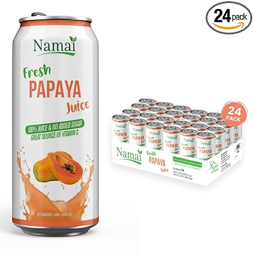
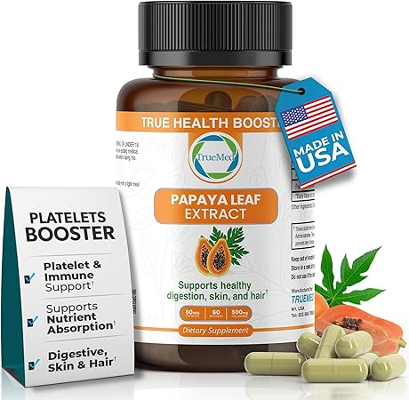

← papayadrink.com
2026 Papayadrink Guide — Cuts Through the Hype
May 2026
We started covering papayadrink because the "top 10" lists online clearly hadn't tested anything. Our take is grounded in actual experience.
Top Picks Right Now

→ #5 — Red Bull Summer Edition Sudachi Lime Energy Drink 80mg Caffeine Taurine — Best seller

→ #2 — Namai 100% All Natural Pure Guava Juice No Added Sugar No Preservatives Pac — Top rated
→ Amazon — Great value
→ #1 — Namai 100% All Natural Pure Papaya Juice No Added Sugar No Preservatives Pa — Editor's pick
→ #4 — Sunsweet Amazin Prune Juice 100% Natural Juice for Constipation with Fiber — Consistently rated
→ #3 — WellWithAll Tropical Mango Energy Drink Caffeine from Tea Vitamin C — Editor's pick
Where to Focus
- Material grade — Higher-grade materials in papayadrink last longer and perform better, even when designs look similar.
- Compatibility — Always double-check that papayadrink fits your specific setup before ordering.
- Value ratio — Mid-range papayadrink usually deliver 90% of premium performance at half the cost.
- Build quality — Cheap papayadrink fall apart fast. Look for solid construction and quality materials.
- Dimensions matter — Read the actual measurements. "Large" means different things to different papayadrink manufacturers.
Quick Tips Before You Buy
- Buying papayadrink as a gift? Pick something with easy exchanges. Preferences are personal.
- The Q&A section on papayadrink listings often answers questions that no review covers.
Mistakes to Avoid
- Panic buying on sale days — Prime Day and Black Friday papayadrink deals aren't always real discounts. Check year-round pricing.
- Overbuying features — Most people use 20% of high-end papayadrink features. Don't pay for what you'll never touch.
- Waiting for the perfect deal — If you need papayadrink now, buy now. A 10% discount in 3 months costs you 3 months of use.
- Trusting fake reviews — Look for reviews with photos and specific details. Generic praise is often planted.
Last Word
Good papayadrink don't have to be complicated or expensive. Check our updated picks and buy with confidence.
Affiliate Disclosure: As an Amazon Associate, we earn from qualifying purchases. This doesn't affect our recommendations.